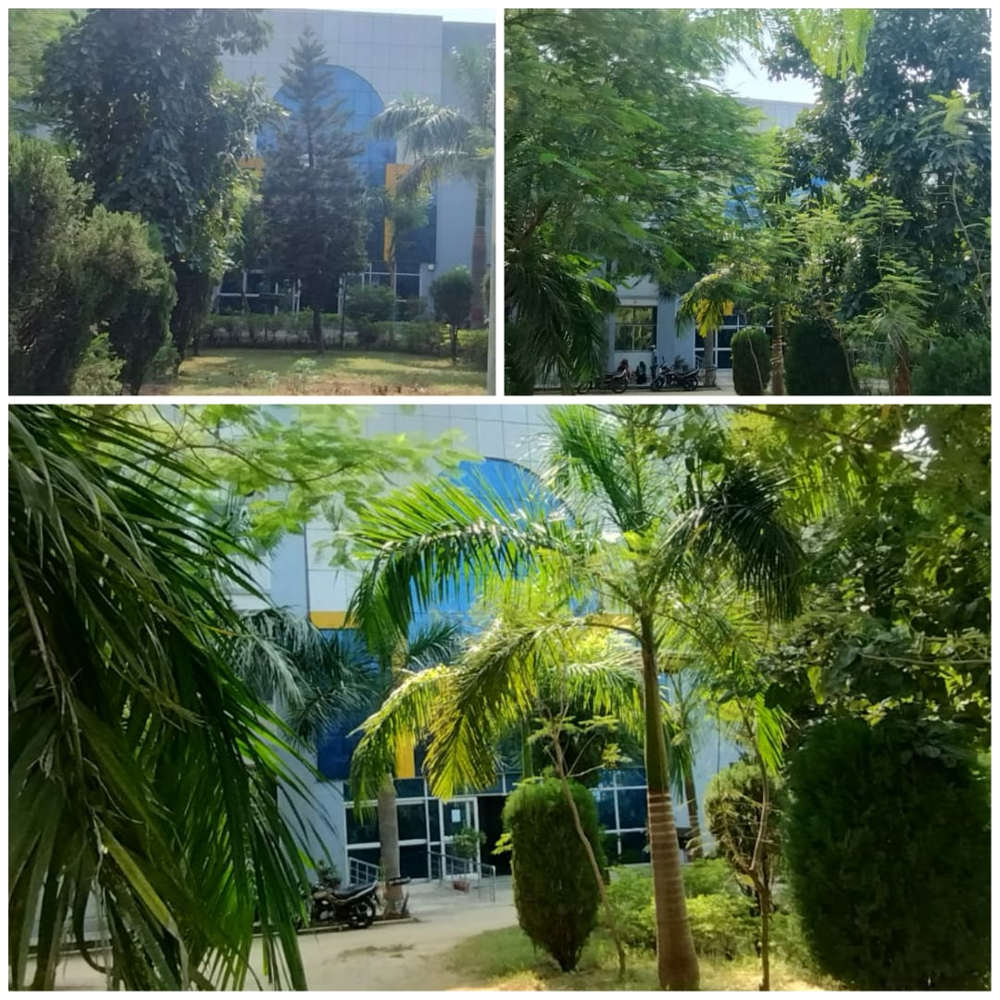
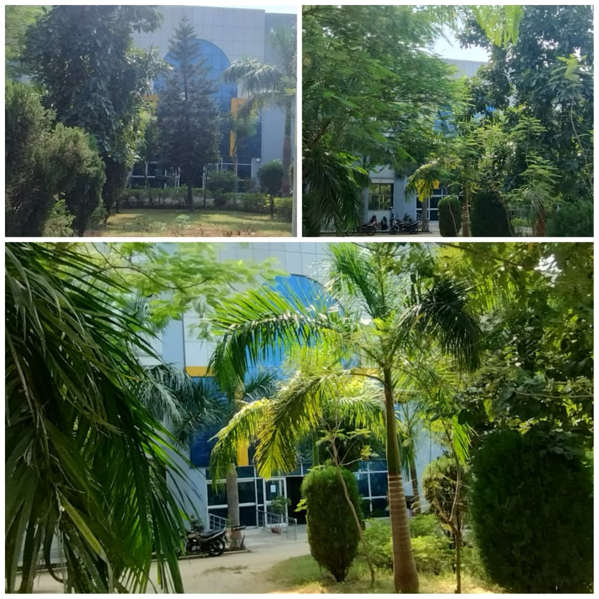

Location
Faridipur, Sultanpur - 228119, [Uttar Pradesh, India]
Available Courses
- B.Tech in:
- Computer Science Engineering (CSE)
- Civil Engineering (CE)
- Mechanical Engineering (ME) Duration: " 4 year full time"
- Diploma in:
- Electronics and communication Engineering (ECE)
- Civil Engineering(CE) Duration: "3 year full time"
- BBA
- Law
- LLB(3 Year), B.A.LLB(5 Year)
- Pharmacy
- B.Sc in Agriculture
- Nursing
- GNM
- ANM
Seat intake :
[130 -> Seat for CSE]
[60 -> Seat for CE]
[60 -> seat for ME]
' 60 seats for each branches '
Facilities
The college provides:
- A Modern and Big Computer Labs for students practice
- A well-stocked , Peaceful Library on the second floor
- Modern Laboratories for every subjects and every branches
- Workshops for hands-on learning
- A spacious , Big , Beautiful Sports Field where annual sports events are organized
- A gym for fitness and training
- Hostels for Students as well as Teacheres for his/her comfort
- Having Canteen where very tasty and healthy breakfast is available
- Smart class rooms
- Conference Hall & Seminar Hall
- internet facility
- Language lab
- Mess
- Medical facility
- Transport facility
- Ragging Free Campus
- Training & Placement cell
Events
Numerous events are organized every year like as:
Photos


.jpeg) 

.JPG)
.jpeg)
.jpeg)


Contact Us
Phone: 945275208
Email: knipssenggsIn@gmail.com
Official website of KNIPSS : knmt.org.in
About Us

 message= "Success is the maximum utilization of the ability that you have"
message= "Success is the maximum utilization of the ability that you have"
KNIPSS is the only education institute on NORTH India whose foundation was led by the then president Dr. Fakhruddin Ali Ahmed .When it comes to quality education in the Eastern UP region,KNIPSS continues to lead the field since its inception 1972 .In year 2008, KNIPSS was expanded to include faculty of engineering to make its marks in the world of professional education ,enlightening mind and empowering ambitions.This institute is nestled at the place og the city ,which is well accessible from the surrounding areas .Throughout the journey of years,Engineering institute has empowered its student to pave the way for excellence and innovation in the field of engineering and technology and has prodeced more than 2430 Alumni.Unique in its structure ,method and goals,the Institute is strongly rooted in a philosophy of education and training and is continuing ist journey